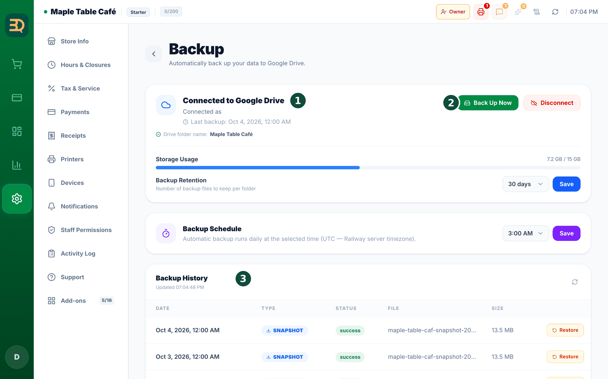
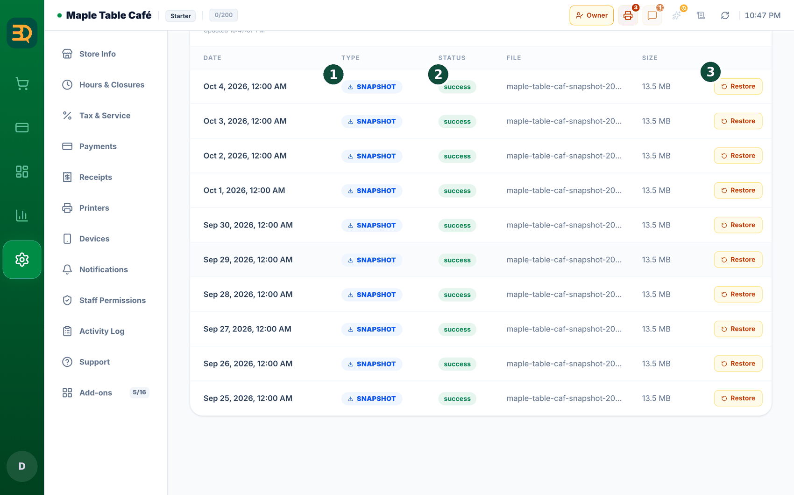

20Copias de seguridad
Una copia de seguridad es una copia de reserva de toda la información de su tienda. BrewDesk puede guardar una en su propio Google Drive, para que sus datos siempre estén seguros.

- Vaya a Settings (Configuración) y busque la página de copias de seguridad.
- Toque Connect Google Drive (Conectar Google Drive) e inicie sesión en su cuenta de Google.
- Eso es todo. A partir de ahora, BrewDesk guarda sola una copia de seguridad nueva, una y otra vez.

- ¿Necesita recuperar una copia anterior? Toque Restore (Restaurar) y elija una copia de seguridad.
Google Drive es un espacio gratuito en línea para guardar archivos. La copia de seguridad va a su propio Drive, así que solo usted puede verla.
Temas relacionados
¿Necesita más ayuda?
Puede enviar un ticket de soporte desde la app en Settings › Support.